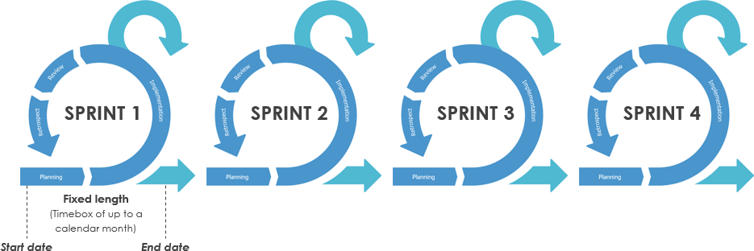
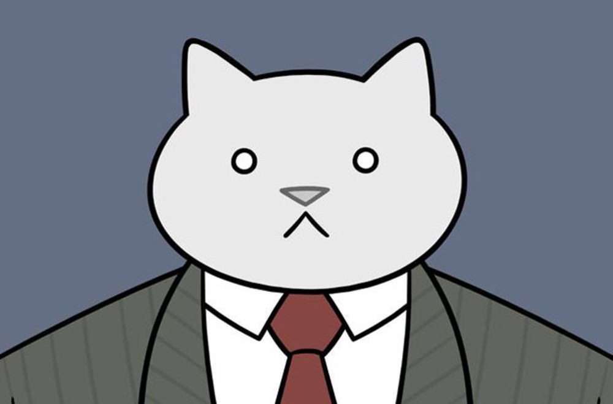
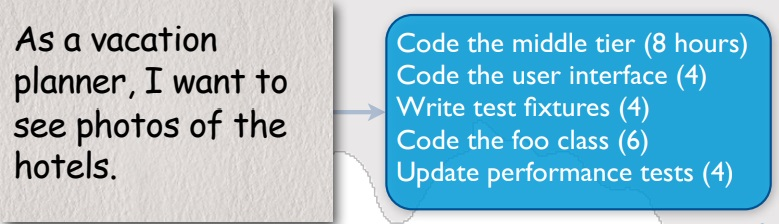
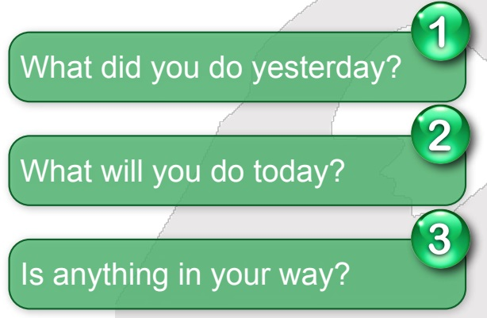
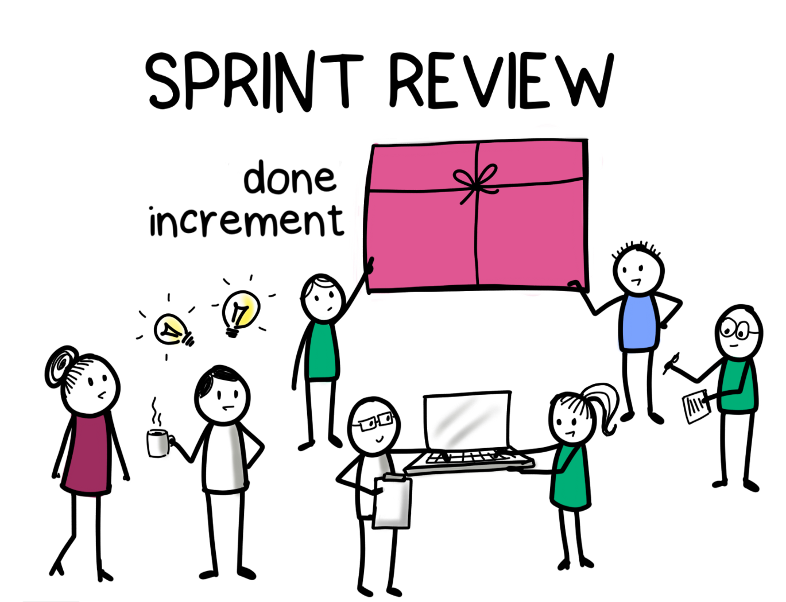
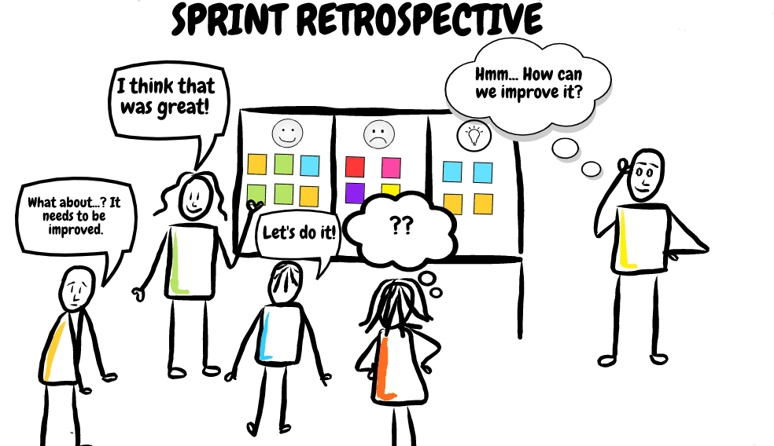
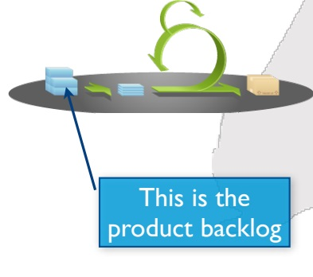

SCRUM
Getting Agile With Scrum, Guys!
marumaru1
RSS School
Scrum has been used by:
- Microsoft
- Apple
- Electronic Arts
- IBM
- Philips
- Lockheed Martin
Characteristics
- Self-organizing teams
- Product progresses in a series of month-long “sprints”
- Requirements are captured as items in a list of “product backlog”
- No specific engineering practices prescribed
- Uses generative rules to create an agile environment for delivering projects
- One of the “agile processes”
Sprints
1. Scrum projects make progress in a series of “sprints”
2. Typical duration is 2–4 weeks or a calendar month at most. A constant duration leads to a better rhythm
3. Product is designed, coded, and tested during the sprint

Scrum Philosophy
- Scrum teams do alittle of everythingall the time
- Rather than doing all of onething at a time

Scrum framework
Roles:
- Product owner
- ScrumMaster
- Team
Artifacts:
- Sprint backlog
- Burndown charts
- Product backlog
Ceremonies:
- Sprint planning
- Sprint review
- Sprint retrospective
Product owner

The ScrumMaster
The team
Sprint planning
•
The daily scrum
- -Daily
- -15-minutes
- -Stand-up
- -Whole world is invited
- -Only team members, ScrumMaster, product owner, can talk
Everyone answers 3 questions
The sprint review

Sprint retrospective

Product backlog
